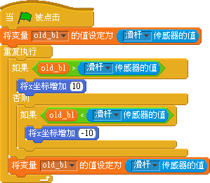
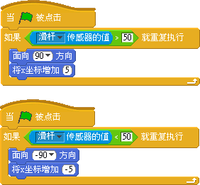

我的滑杆控制角色平移方法
#1 我的滑杆控制角色平移方法 作者：有志青年 发表时间：2013-4-5 19:48:20
自从收到感应板后，各路高手都提交了自己的作品，最多的是滑杆的应用，下载各位的作品后发现，通过滑杆来控制角色运动的效果大家大同小异，但方法却完全不同。现就此试着做一些梳理，与大家分享：
我们在完成一个程序时，必定先有一个目标，设想最终的最终效果，然后在头脑中模拟设计，如何实现这样的效果，之后才是付诸实施。
一、滑杆控制的效果
滑杆控制角色，应该是一个怎样的效果呢？可能不是一个简单的滑杆滑到左边，角色就到左边这样的效果，我想至少分这样集中情况：1/滑杆当前位置往左滑，角色往左移动；2/滑杆在滑动槽的相对位置决定角色在场景中的相对位置；3/滑杆滑到一定位置的时候角色才开始朝某一个方向移动。
三种情况，都涉及到滑杆的数值与角色运动之间的关系
二、实现的两种方法
滑杆的数值从0-100，角色的坐标从负240-正240，这之间的转换对成年人来说只是个时间的问题，但对于学生来说，需要考虑的问题太多，我放在最后讲。
（方法一）
在scratch中国看到自在修行网友的范例“ 滑杆控制小猫前后移动”中给出了一种巧妙的方法：比较滑杆动之前的数值和动之后的数值来决定角色向左还是向右。
用语言描述就是在滑杆动了之后，如果新的数值比动之前的数值大就朝方向a（左或者右），如果新的数值比动之前的数值小就朝方向b（右或者左）
我想以上的语言描述转换为程序代码是很容易的，这一方法的关键在于认识到旧值与新值之间的关系。

（方法二）
巧妙的方法必定是在常见的思维基础上进行提炼的，那么我们常见的思维是什么呢？
滑杆的数值是0-100，我们自然想到了中间值在50，对应场景的坐标，也就可以理解为大于50，你就到坐标的右边玩，小于50你就到坐标的左边玩。
这在网友eyanlong 的作品“接球（滑竿）”中可以看到，这种方法是学生最容易理解的，也很容易实现。

三、我的方法：
以上两种方法都能让角色左右移动，但问题也同样存在，如方法1，常常在手触碰到滑杆的时候，角色就开始移动，时间一长角色就会偏在一个角落上了，相比较方法1，在操控性上方法2，反而更容易一些，且容易被游戏者接受，满意度也比较高，但因为需要不断判断传感器的值来确定角色的方向，并通过5步这样的微小数值来调整，所以灵敏度还有所欠缺，那能不能加大x坐标变化的数值呢？各位可以试试。
如果在玩弹球游戏这样的滑杆操作时，以上两种方法就有些力不从心了。
因此，我们需要将角色的x坐标与滑杆的数值进行对应，说起来容易，但设计起来还需要几步转换：
1、滑杆的最小值是0，坐标是-240
2、因为滑杆的方向问题，当滑杆值是100时，应该对应坐标-240方位，而滑杆值是0时对应坐标240方位
因为角色自身是有一定的大小的，因此我将坐标值限定在负200到正200之间，通过算数运算得到以下转换公式